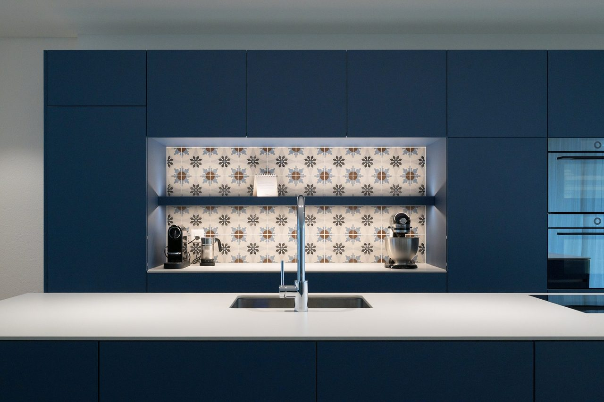
Küche 1 von 4
Marineblau
Musterfliesen in der beleuchteten Nische, darunter eine durchgehende weisse Abdeckung.
Seit 1920, in vierter Generation. Geplant, gefertigt und montiert von der Bissig AG in Schattdorf.
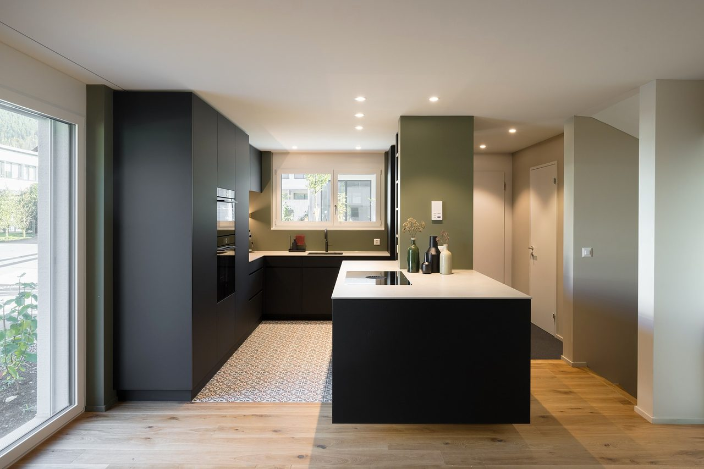
Vier Küchen von Bissig. Jede öffnet sich aus ihrer Nische. Merken Sie sich, was Ihnen gefällt: Ihre Auswahl geht mit in die Anfrage.

Musterfliesen in der beleuchteten Nische, darunter eine durchgehende weisse Abdeckung.
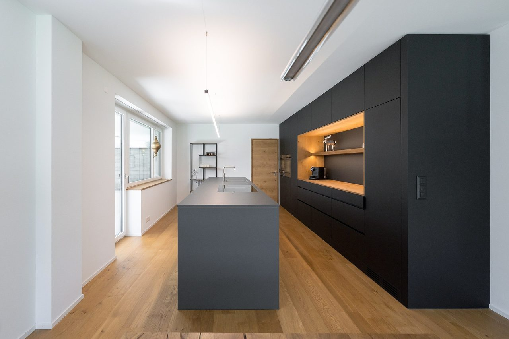
Eine ganze Wand in Anthrazit, in der Mitte eine Nische aus Eiche mit Licht.
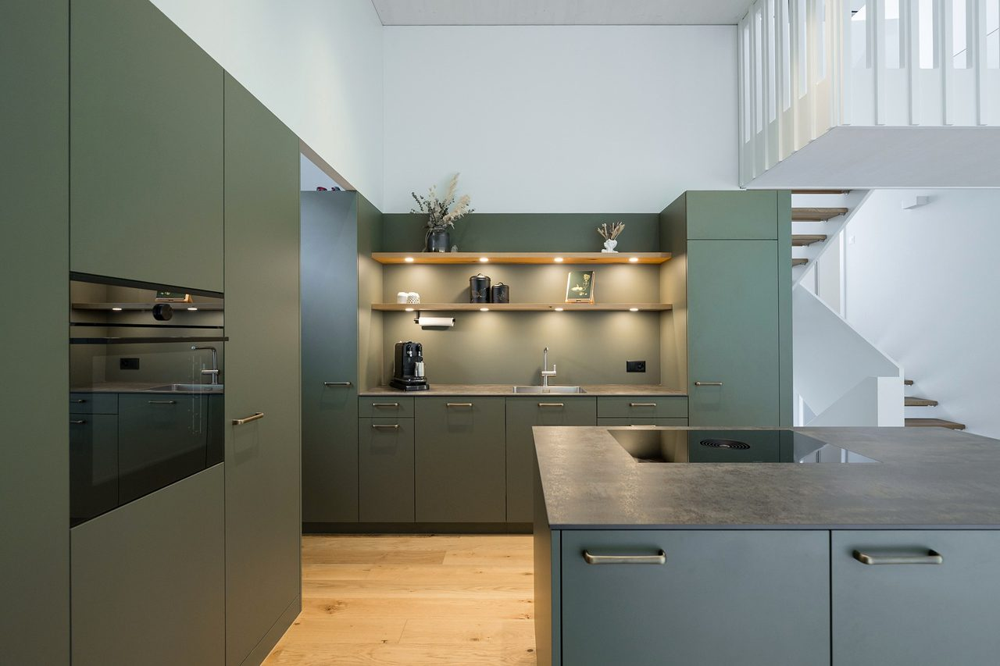
Offene Eichenregale mit Licht darunter, eine Kochinsel mit dunkler Abdeckung.
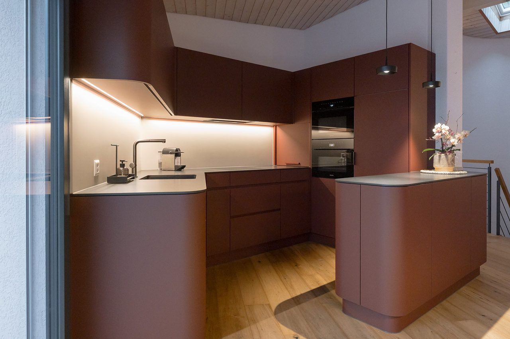
Runde Formen statt Kanten, ein Lichtband unter den Oberschränken.
Küchen für jeden Anspruch und jedes Budget.
So steht es bei Bissig. Was zu Ihrem Haus passt, besprechen Sie am besten vor Ort.
Ihre Küche besprechenMöbel fertigt Bissig als Massanfertigung nach Ihren Wünschen: nach Design, Funktion, Farbe und Material. Vom Einbau am Fenster bis zur Garderobe.
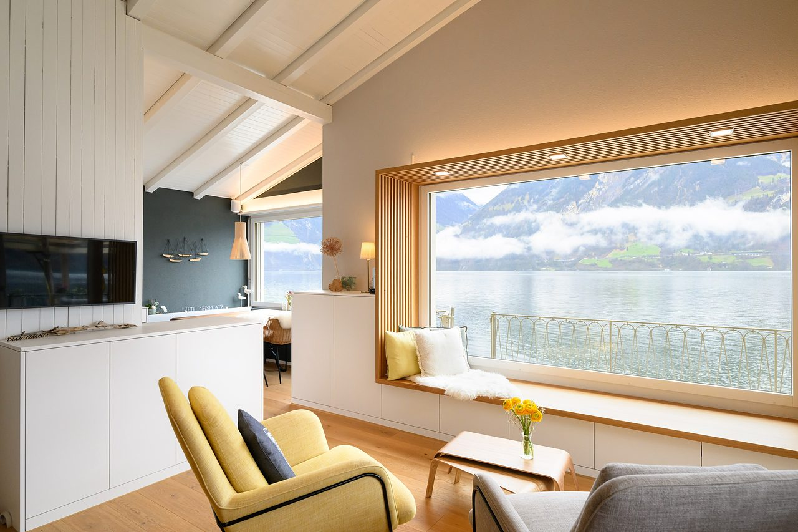
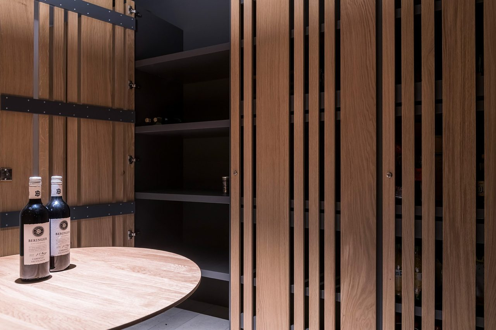
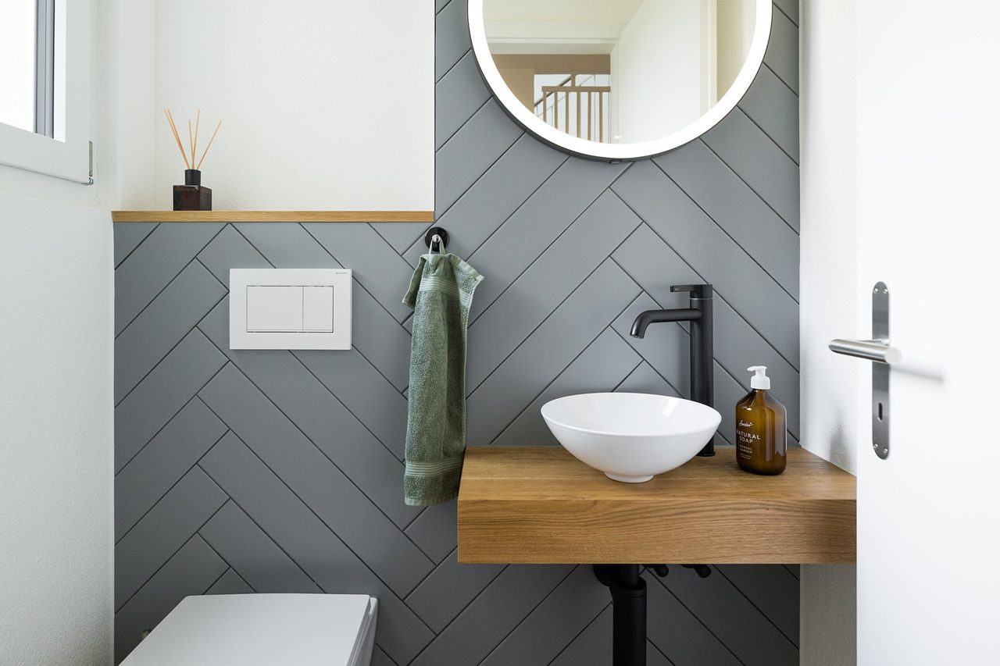
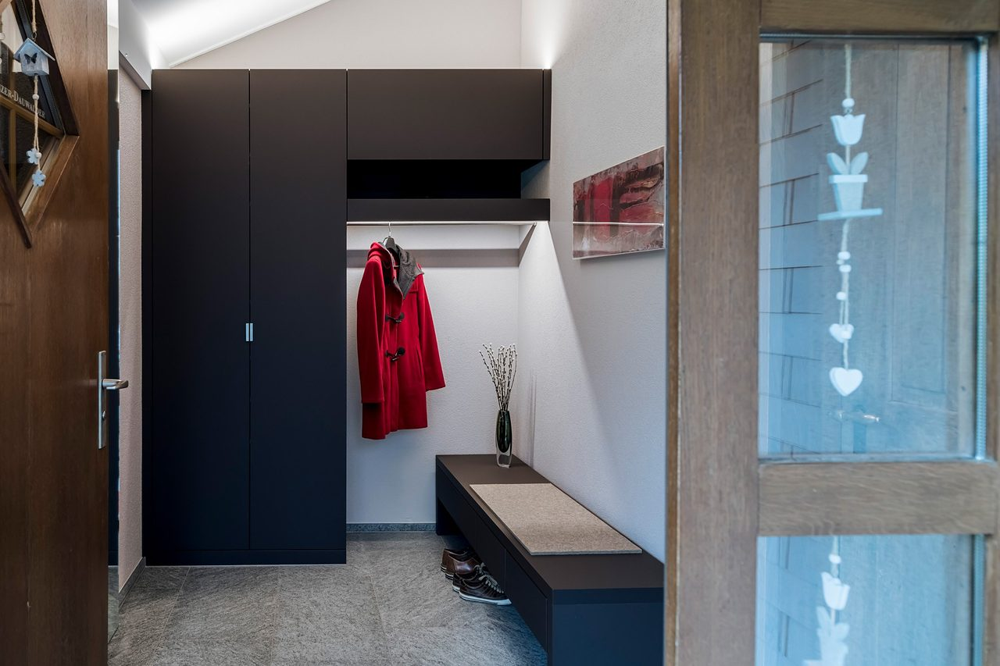
Alle unsere MitarbeiterInnen tragen persönliche Verantwortung von der Planung bis zur Montage.
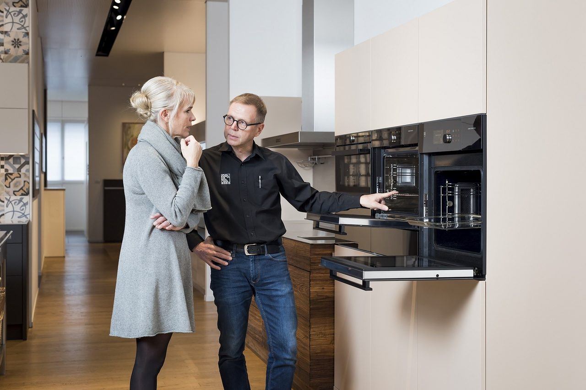
Sie erzählen von Ihrem Haus und Ihren Wünschen. Geräte von V-ZUG, Miele, Siemens, Electrolux, Gaggenau und Wesco gehören zum Angebot.
Für Ihren Anspruch und Ihr Budget. Zur Geschäftsleitung gehören Stefan Bissig, eidg. dipl. Schreinermeister (Verkauf und Planung), und Sonja Prandi, Innenarchitektin FH.
Gefertigt in der eigenen Produktion, Möbel als Massanfertigung.
Umbaubegleitung bis zur Schlussabrechnung, danach Gerätetausch, Werterhalt und Reparaturservice.
Wer eine neue Küche plant, kann vorher ausprobieren, was ein Steamer kann. Und wer einfach gern kocht, kommt zum Kurs.
Glamour pur
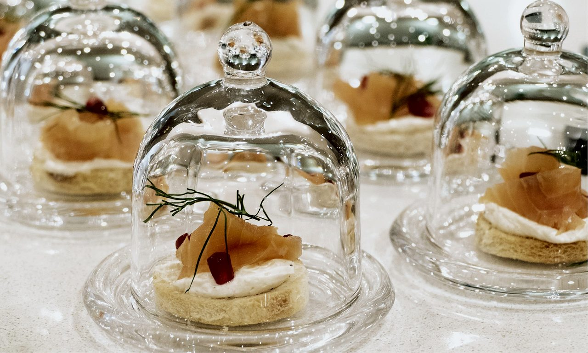
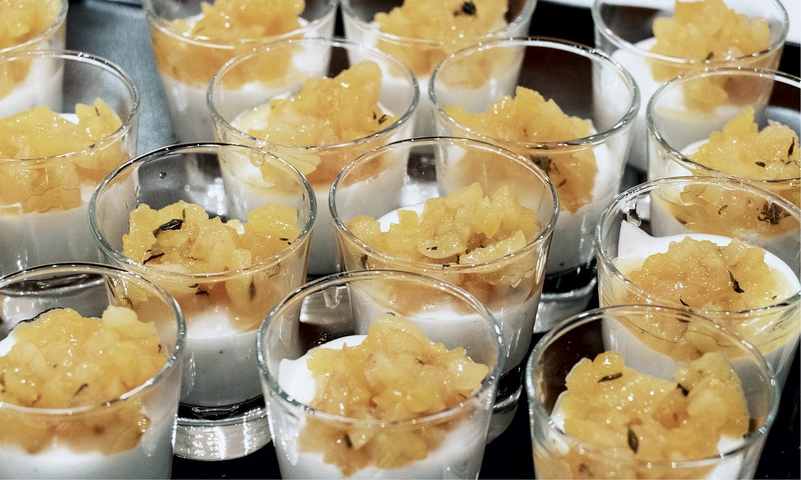
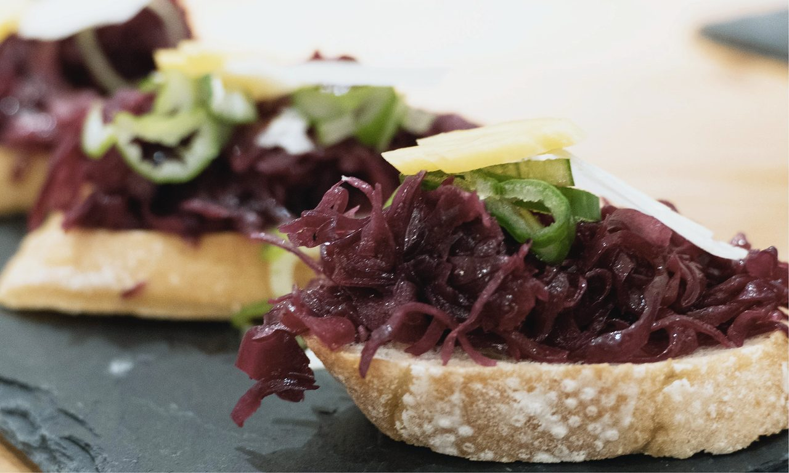
Geschlossene Gruppen auf Anfrage. Kurse 2027 folgen.
Wählen Sie einen Wunschtag in der Ausstellung. Daraus entsteht eine fertige E-Mail an die Bissig AG.
Zeiten an Feiertagen: bitte anrufen.